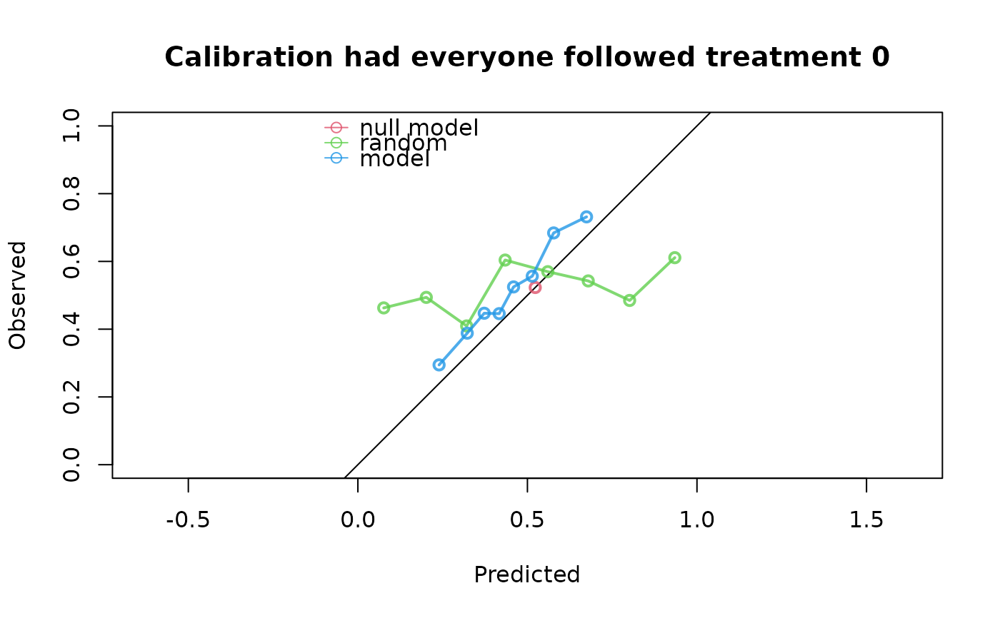

Estimates the performance of predictions of binary or time-to-event outcomes under baseline interventions, by reweighting the data to form a pseudo-population in which every subject was assigned the treatment level of interest.
Usage
ip_score(
object,
data,
outcome,
treatment_formula,
treatment_of_interest,
metrics = c("auc", "brier", "scaled_brier", "oeratio", "calplot"),
time_horizon,
cens_model = "KM",
cens_formula = ~1,
null_model = TRUE,
bootstrap = 0,
bootstrap_progress = TRUE,
iptw,
ipcw,
quiet = FALSE,
strip_ipt_models = TRUE
)Arguments
- object
One of the following three options can be used to input the predictions to be evaluated:
a numeric vector, corresponding to the risk estimates under evaluation
a glm or coxph model, from which the predictions under evaluation can be derived. See details.
a (named) list, with one or more of the previous 2 options, for evaluating and comparing multiple prediction vectors/models at once.
- data
A data.frame containing the observed outcome, assigned treatment, and necessary adjustment variables (confounders) for the evaluation of object.
- outcome
The outcome of interest within data. This could either be the name of a single numeric/logical column in data, or a Surv object for time-to-event data, e.g. Surv(time, status), if time and status are columns in data.
- treatment_formula
A formula which indicates the treatment/intervention variable (left hand side) and the adjustment variables (right hand side) in the data. E.g. A ~ L. The left hand side can be either a binary treatment (coded as 0/1 numeric, logical or factor) or a treatment with more than two categories (coded as a factor). The right hand side variables are used to estimate the inverse probability of treatment weights (IPTW) with logistic/multinomial regression. The IPTW can also be specified directly as a vector using the iptw argument, in which case the right hand side of treatment_formula is ignored (the left hand side must still indicate the treatment, i.e. A ~ 1).
- treatment_of_interest
A treatment level under which the predictions should be evaluated.
- metrics
A character vector specifying which performance metrics to compute. Options are c("auc", "brier", “scaled_brier”, "oeratio", "calplot"). See details.
- time_horizon
For time to event data, the prediction horizon of interest.
- cens_model
Model for estimating inverse probability of censored weights (IPCW). Methods currently implemented are Kaplan-Meier ("KM") or Cox ("cox"), with censoring times derived from the Surv object specified under outcome, reversing the event indicator, see details. KM is only supported when the right hand side of cens_formula is 1.
- cens_formula
Model formula from which the right hand side is used in estimating the censoring probabilities. The left hand side must be left blank. E.g. ~ x1 + x2.
- null_model
If TRUE fits a model without covariates that estimates the same probability for all subjects in data. The model is fitted using the reweighted data in which all subjects 'counterfactually' received the treatment level of interest (using the IPTW, as estimated using the treatment_formula or as given by the iptw argument). For time-to-event outcomes, the null model is also fitted using the IPCW, as estimated using the cens_formula, or as given by the ipcw argument. The null_model can be used as reference (baseline) model.
- bootstrap
If this is an integer greater than 0, this indicates the number of bootstrap iterations, used to compute 95% confidence intervals around the performance metrics based on percentiles of the bootstrap results.
- bootstrap_progress
if set to TRUE, print a progress bar indicating the progress of the bootstrap procedure.
- iptw
A numeric vector, containing the inverse probability of treatment weights. If iptw is not specified, these weights are computed using the treatment_formula, but they can be specified directly via this argument. A user-defined function can also be specified, which takes as input 'data' and returns a numeric vector of IPTW weights. See details.
- ipcw
A numeric vector, containing the inverse probability of censoring weights at the time_horizon, or at a subject's event time, whichever happens first. For subjects who are censored before the time_horizon, the ipcw can be left at NA. If ipcw is not specified, these weights are computed using the cens_formula, but they can be specified directly via this argument. A user-defined function can also be specified, which takes as input 'data' and returns a numeric vector of IPCW weights. See details.
- quiet
If set to TRUE, don't print assumptions.
- strip_ipt_models
If set to TRUE (default), unnecessary components from the IPT- and IPC-model objects are not stored to save memory. Set to FALSE if you want to store the full IPT/IPC model objects.
Value
An object of class `ip_score`, for which the `print()` and `plot()` methods are implemented. The object is a nested list containing:
`$score`, contains the estimated predictive performance metrics.
`$bootstrap`, if requested, the 95% confidence intervals of the performance metrics, and the performance metrics for each individual bootstrap iteration.
`$outcome`, the observed outcomes in data.
`$treatment`, the observed treatment levels in data.
`$predictions`, the predictions to be evaluated, i.e. the estimated probability of event under the intervention of interest for each subject.
`$ipt`, method, model and inverse probability of treatment weights (IPTW). The IPTW are NA for subjects who did not receive the treatment level of interest.
`$ipc`, method, model and inverse probability of censoring weights (IPCW). The IPCW are NA for subjects who were censored before the time_horizon.
`$pseudopop`, binary vector indicating which subjects in data were re-weighted to create the pseudo-population. These are the subjects who were observed to receive the treatment level of interest and were not censored before the time_horizon, if applicable.
The print method summarizes the results and (if quiet = FALSE), prints the assumptions required for valid inference.
Details
When supplying a glm or coxph model as object, the function will try to estimate risks from the model under the treatment level of interest for all subjects in data. If the model does not have the treatment as covariate, it is assumed it already estimates the risk under the treatment level of interest (e.g. because the model was fitted in a population all receiving the treatment level of interest). Alternatively, if the model includes the treatment as covariate, the function estimates the risk under the treatment level of interest for all subjects in data, even if they were assigned an alternative treatment level.
All performance metrics are computed on the weighted population mimicking the hypothetical situation where every subject’s treatment level was set to the treatment level of interest (and where nobody was censored before time_horizon). "auc" is area under the (ROC) curve. "brier" is Brier score, ranging from 0 to 1. Scaled brier score is also available (metrics = "scaled_brier"), which expresses the Brier score relative to the null model. For the O/E ratio, the numerator (observed) is the (weighted) fraction of 'observed' events in the pseudo-population, and the denominator (expected) is the (unweighted) mean of risk estimates for all subjects in data. The calplot option generates a calibration plot, with default 8 subgroups. More/less subgroups can be specified by appending “calplot” with a number indicating the number of subgroups, e.g. metrics = "calplot10" for 10 subgroups.
The null model estimates are obtained as the weighted mean outcome in the subset observed with the treatment level of interest (and not censored before time_horizon). For time-to-event data, this null prediction could also be computed using a weighted Kaplan-Meier estimator, which would be more efficient, but computationally slower.
The censoring distribution is estimated with a Kaplan-Meier estimator implemented using `prodlim::prodlim(..., reverse = TRUE)`. This correctly estimates the censoring distribution when there are ties between event and censoring times. When using a Cox model to estimate the censoring distribution, the event indicator is reversed. This does not preserve the usual tie-handling convention: in standard survival analysis, censoring is assumed to occur after events at the same time point, but after reversing the indicator the opposite ordering is assumed. A possible workaround is to add a small positive offset (`epsilon`) to all censoring times before fitting the censoring model.
Bootstrapping is not possible when manually specifying the IPTW/IPCW as numeric vectors. If specifying a user-defined function that computes the IPTW/IPCW given data, it is possible. The given function will be called on each bootstrapped dataset and resulting metrics are used to compute the 95% CIs with the percentile method. More advanced techniques, such as thresholding extreme IP weights, can be implemented through user-defined weight function. The censoring weight returned by this function should be the 1 / probability of remaining uncensored till the time_horizon, or till a subject's event time, whichever happens first. For subjects who are censored before the time_horizon, the ipcw can be left at NA.
References
Keogh RH, Van Geloven N. Prediction Under Interventions: Evaluation of Counterfactual Performance Using Longitudinal Observational Data. Epidemiology. 2024;35(3):329-339.
Boyer CB, Dahabreh IJ, Steingrimsson JA. Estimating and Evaluating Counterfactual Prediction Models. Statistics in Medicine. 2025;44(23-24):e70287.
Pajouheshnia R, Peelen LM, Moons KGM, Reitsma JB, Groenwold RHH. Accounting for treatment use when validating a prognostic model: a simulation study. BMC Medical Research Methodology. 2017;17(1):103.
Examples
n <- 1000
data <- data.frame(L = rnorm(n), P = rnorm(n))
data$A <- rbinom(n, 1, plogis(data$L))
data$Y <- rbinom(n, 1, plogis(0.1 + 0.5*data$L + 0.7*data$P - 2*data$A))
random <- runif(n, 0, 1)
model <- glm(Y ~ A + P, data = data, family = "binomial")
score <- ip_score(
object = list(random, model),
data = data,
outcome = Y,
treatment_formula = A ~ L,
treatment_of_interest = 0,
)
print(score)
#> Estimation of the performance of the prediction model in a
#> pseudopopulation where everyone's treatment A was set to 0.
#> The pseudopopulation is constructed from 494 (49.4%) subjects
#> ($pseudopop) in data who indeed received treatment level 0. These
#> subjects are reweighted to represent the full target population under a
#> hypothetical intervention in which everyone received this treatment
#> level.
#> The following assumptions must be satisfied for correct inference:
#>
#> Causal assumptions:
#>
#> - Conditional exchangeability: after adjustment for the covariates used
#> to construct the inverse probability of treatment weights (IPTW), i.e.,
#> {L}, there is no unmeasured confounding for the relation between
#> treatment and outcome.
#> - Conditional positivity: the probability of receiving treatment level
#> 0 should be greater than zero for each value (combination) of the
#> variable(s) {L} that is observed in the full population. The
#> distribution of IPT-weights can be assessed with
#> $ipt$weights[$pseudopop$ids].
#> - Consistency: the observed outcome under the received treatment level
#> equals the potential outcome under that treatment level. This includes
#> the assumption of no interference between subjects.
#>
#> Modeling assumptions:
#>
#> - Correctly specified propensity model. Estimated treatment model is
#> logit(A) = 0.02 + 0.98*L. See also $ipt$model.
#>
#> Performance estimates:
#>
#> model auc brier scaled_brier oeratio
#> null model 0.500 0.249 0.00 1.00
#> random 0.544 0.310 -24.18 1.04
#> model 0.668 0.232 7.05 1.17

plot(score)